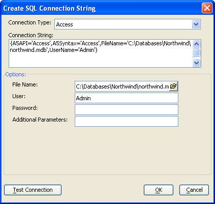

Create SQL Connection String Dialog
The SQL Connection String dialog helps you define the connection string that you need to open a connection with an external database.
Select a Connection Type. The options include:
"Access"
"DB2"
"Excel"
"MySQL"
"OCI"
"ODBC"
"Oracle"
"OracleLite"
"QuickBooks" (requires QOBC license)
"SQLAnywhere"
"SQLServer"
"Sybase"
Some data sources first require that you select a file.
If the File Name control appears, click
 to navigate to and select
a database.
to navigate to and select
a database.If the User control appears, and a login is required, enter your user name.
If the Password control appears, and a login is required, enter your password.
If the Additional Parameters control appears, enter any additional parameters that may be required to connect with the database.

Some data sources first require that you select a server.
If the Hostname control appears, enter the URL of the server.
If the Port control appears, enter the port number that the database monitors.
If the User control appears, and a login is required, enter your user name.
If the Password control appears, and a login is required, enter your password.
If the Database list appears, click Refresh and select a database.
See Also